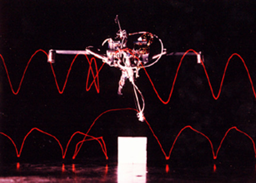
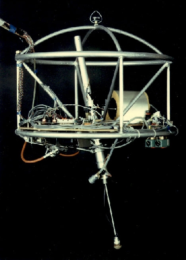
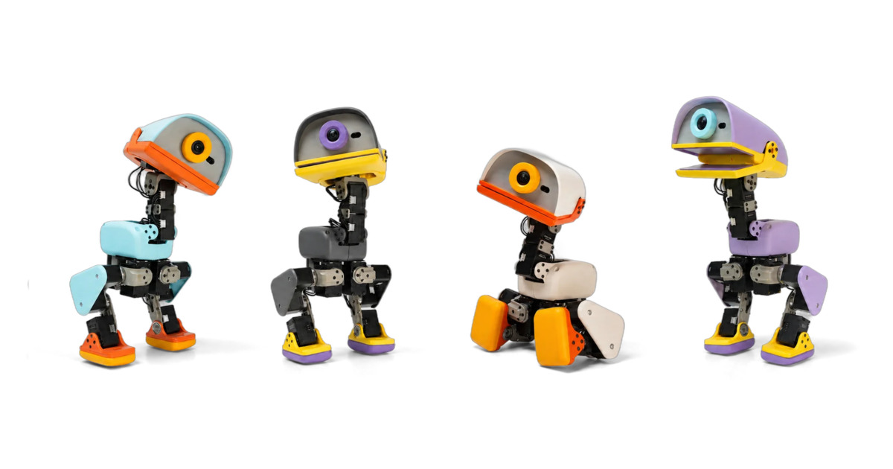

There's a particular magic the first time a machine catches itself — a stumble corrected, a hop landed. For a moment it stops looking like a mechanism and starts looking alive. That flicker — intelligence meeting lifelike movement — is what every roboticist is chasing. Here's where it began.
A machine learns to balance.
In 1980, Marc Raibert founded the MIT Leg Lab. While other robots crept along carefully keeping their balance, his hopping machines did the opposite — they fell and caught themselves, balancing dynamically the way living things do. Pogo-stick simple, and the first proof that a machine could have reflexes, not just choreography.


Photos: MIT Leg Lab. Dynamic balance became the DNA of modern legged robots; Raibert went on to found Boston Dynamics.
Balance becomes a language.
Those principles — spring legs, body balance, foot placement — became the grammar of every legged robot since. But for decades it stayed locked inside national labs and a few companies: specialized hardware, custom control stacks, teams of PhDs. The magic was real — but almost nobody could get their hands on it.
Intelligence, now affordable.
Then two things changed: movement became learned instead of hand-coded — trained in simulation with reinforcement learning — and the hardware got cheap and open.

Look no further than Microduck — a 25 cm open-source biped from Pollen Robotics (Hugging Face's robotics team) that teaches itself to walk in sim and runs on-device for a few hundred dollars. When it dropped, it struck a nerve: a waddling little duck that lit up robotics timelines everywhere. That reaction is the real signal — people are hungry to build this, and the barrier to entry just fell through the floor.
Unitree is the other half of the story: scale. Its Go2 quadrupeds and G1 humanoids come off real production lines, with a supply chain that keeps driving prices down — the volume and availability that turn lab demos into robots you can actually deploy against real-world work.
The embodiment of intelligence is the way we harness AI to push upon the real world, like humans do. When that happens, it will unlock the full potential of AI: a future where intelligent machines interact with us and help us. But to get there, we need to encourage more building and more experimentation — for everyone, not just well-funded labs or PhD-level researchers — to build the robots of the future.
Physical AI is hard. We bring the pieces together.
Here's the thing nobody tells you: a robot that moves like it's alive is a stack of hard problems balanced on top of each other, all running in real time against unforgiving physics. Miss any one of them and the magic collapses into a pile on the floor.
The exciting part: every one of those pieces now exists. Capable, affordable hardware like Microduck and Unitree. Frontier models and world models. Reinforcement learning and high-fidelity simulation. Open policies shared by a global community. For the first time, the whole toolbox is on the table.
What's missing is integration. Today those pieces live in separate silos — different tools, different teams, different file formats — and stitching them together is the tax every builder pays before the magic ever shows up.
Game Robotics brings them together under one platform: hardware, frontier models, and training workflows in a single place where iteration feels like play. Sketch an idea, train a behavior, watch it come alive, change your mind, try again. We turn the technical challenges of robotics into a creative, streamlined workflow — for creativity, fast iteration, and robots that actually work.